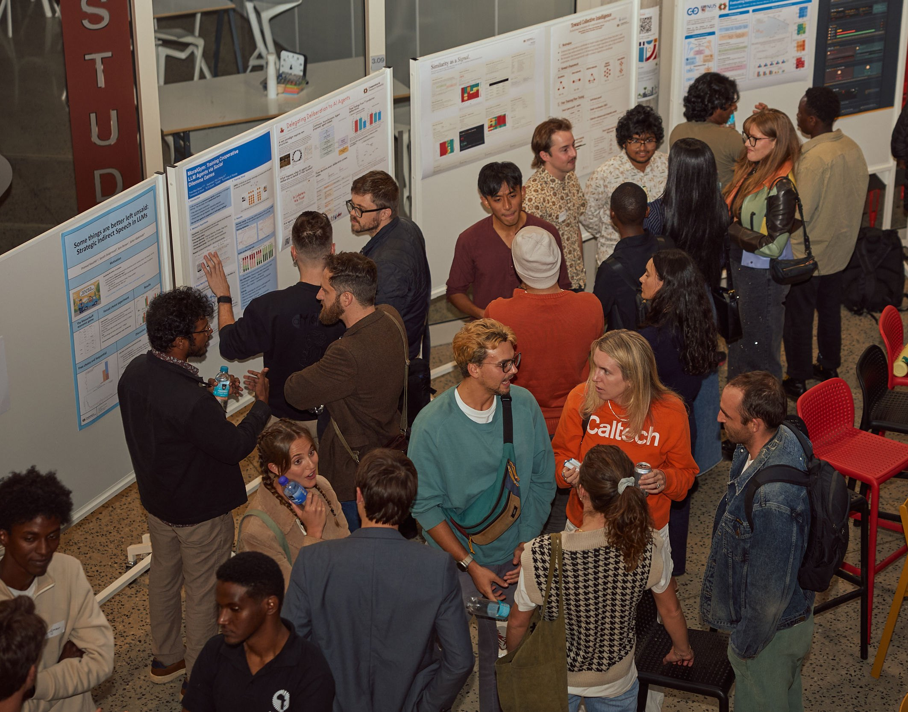

Participate in empowering humanity.
Join us as a volunteer, co-worker, donor, or by following our work on social media. Subscribing to our Substack is the best way to stay updated on our work and opportunities to get involved.
Subscribe to our newsletter
Announcements, updates, and opportunities, delivered via Substack.
Subscribe on Substack →
Volunteer for a local group
We support emerging AI safety groups across the country, largely in connection with major cities and top universities. We are looking for more volunteers to support these groups.
Apply to volunteerWhatsApp Group
We have an active national WhatsApp group that provides a venue for discussion for responsible tech advocates across the country — a high-signal channel that supports thoughtful, good-faith discussion.
Apply to join the groupCo-work with us
Apply to join our co-working space at our central hub: the Cape Institute for Safe AI. This office is based in central Cape Town.
Apply for co-workingDonate
Supporting us financially is a great way to help us achieve our mission. Donations are tax-deductible from the US, and will soon be from SA.
Donate